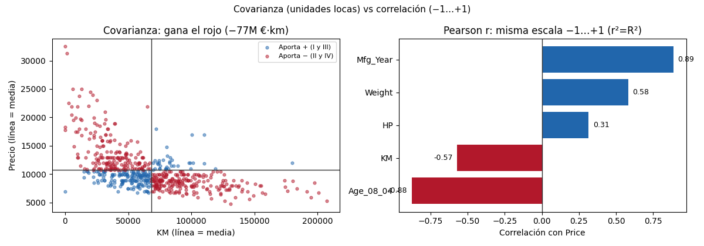

Unidad 6 · Regresión lineal simple y múltiple · Lección 0023
Correlación vs regresión: de Galton a r
Win de hoy: medir asociación con covarianza (−77M €·km), normalizarla a r = −0,57 y conectar r² = 0,325 con el R² de la 0003.
1 · Orígenes: Galton y la regresión a la media (1886)
Francis Galton cruzó alturas de padres e hijos: hijos de padres altísimos eran altos… pero menos extremos
que sus padres. Lo llamó regresión a la media,
y de ahí viene la palabra “regresión”. Pearson la formalizó con r; Legendre y Gauss ya ajustaban rectas
por mínimos cuadrados. Todo U6 desciende de esa tabla de alturas.
2 · Covarianza: el signo sirve, el número no
La covarianza promedia (x − x̄)·(y − ȳ): cada auto vota + (cuadrantes I/III) o − (II/IV). KM–Price da
−77.534.281: el signo dice “van opuestos” (gana el rojo en la figura), pero ¿−77M es mucho o poco?
Imposible saberlo: las unidades (€·km) no se comparan con nada (Edad–Price da −59.136 €·mes: ¿mayor? incomparable).
df["KM"].cov(df["Price"]) # -77534281.0 (€·km, ininterpretable)3 · Pearson r: covarianza en escala −1…+1
r de Pearson divide por ambos desvíos: −1 (opuestos perfectos), 0 (nada lineal), +1 (juntos perfectos). KM–Price: r = −0,57; Edad: −0,88; Año: +0,89. Prima robusta: Spearman (−0,62 en KM) usa rangos en vez de valores: aguanta outliers y curvas. Ambas miden fuerza lineal, no causalidad (el Id −0,74 de la 0006 saluda).
4 · Correlación vs regresión (y el puente r² = R²)
- Correlación: un número simétrico (−0,57): “qué tan juntos se mueven”. Sin fórmula ni dirección.
- Regresión: una fórmula asimétrica (
Price = 14.508 − 0,055·KM): “cuánto vale dado KM”.
El puente: en regresión simple, r² = R². Acá (−0,57)² = 0,3249 = el 0,325 de la 0003. La recta explica exactamente lo que la correlación promete. (En múltiple, 0024, el puente se ensancha.)
Receta bivariada (4 pasos de clase): 1) mirar la naturaleza (¿directa o inversa?); 2) identificar niveles de medición (nominal, ordinal, ratio); 3) exigir significancia (¿se repite en otra muestra?); 4) cuantificar con rigor (Pearson, o Spearman si hay outliers).
5 · Figura: cuadrantes y r comparables

Regenerar la figura (mismo resultado versionado en assets/img/toyota/):
python scripts/make_figures.py --only correlacion-vs-regresion6 · Quiz (auto-chequeo inmediato)
7 · Fuente primaria y cierre
Para profundizar (1 fuente): James et al., An Introduction to Statistical Learning — capítulo de regresión lineal (statlearning.com, PDF libre; también en RESOURCES.md del curso).
¿Algo no quedó claro? Preguntame al agente: por qué r² = R², cuándo Spearman le gana a Pearson, o qué “regresa” en regresión a la media. Esa pregunta vale más que releer.